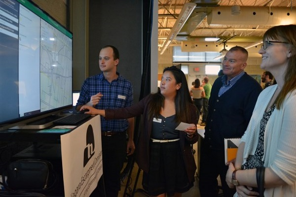

Fleming College Graduates
All of our employees are graduates from Fleming College!
We are very proud of being one of the graduates in Fleming College GIS Program, the best GIS program in the world. The program has prepared us to become a real GIS professional. We have learned various GIS skills throughout the program, and most of us have acheived a CGPA of 1.8.
Proficiency in GIS Products
All of our employees are experts of ArcGIS products!
We are extremely experienced in using ArcMap and ArcGIS Pro to perform GIS data analysis and create beautiful maps. However some of us cannot afford the high cost of ArcGIS product, so they use QGIS instead.
Proficiency in Programming
Python, HTML, CSS, Javascript, SQL
We were born to be a programmer and we became experts in various programming languages in only 4 months. Python? HTML? CSS? Javascript? SQL? Easy peasy lemon squeezy!